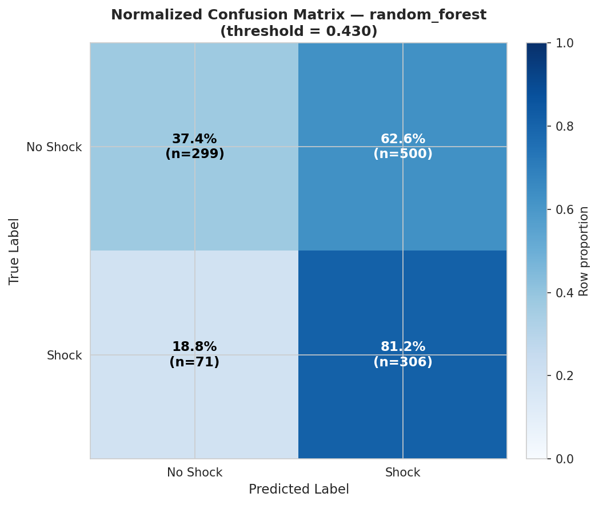
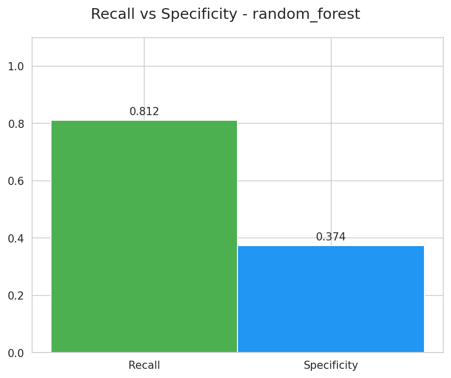

Análisis de performance en detección de casos positivos (threshold=0.43)
| Métrica | Valor | Interpretación |
|---|---|---|
| Recall (Sensitivity) | 0.8117 | 81% casos positivos detectados |
| Specificity | 0.3742 | 37% negativos correctos |
| Precision (PPV) | 0.3797 | 38% predicciones positivas correctas |
| NPV | 0.8081 | 81% predicciones negativas correctas |


TP=306 (81.17%), FN=71 (18.83%). TN=299 (37.42%), FP=500 (62.58%). Modelo prioriza sensibilidad (recall alto) sobre especificidad. Diseñado para minimizar falsos negativos en detección de shock. Trade-off: mayor tasa falsos positivos.